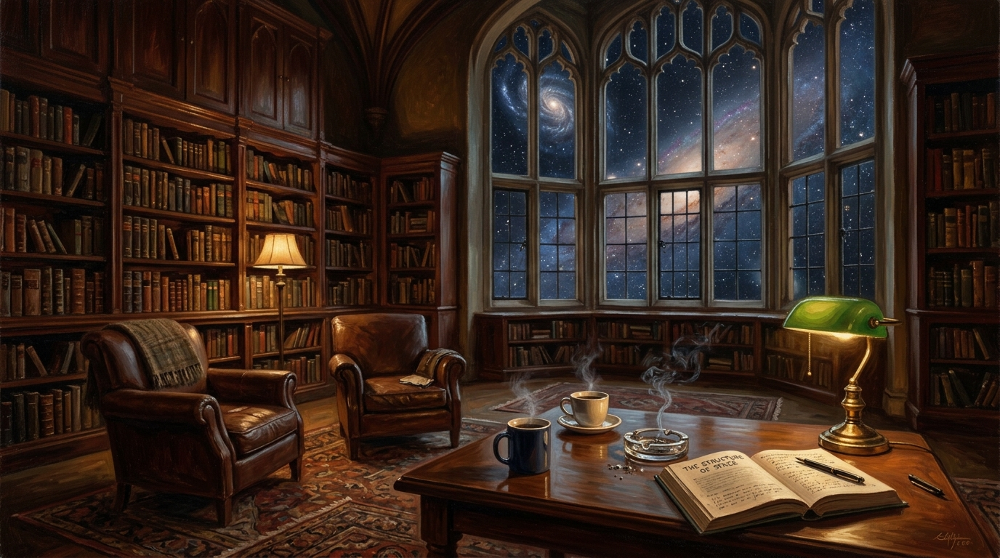

Christopher Hitchens Meeting With God.
A Philosophical Dialogue on Being, Dogma, and the Continuum of Inquiry.

“It was a great surprise when Christopher Hitchens learned the truth of Being. That it was a continuum, not an end... You spent so much time studying those who claimed to represent me that eventually you began mistaking them for me.” — Trevor Swistchew
“Question Everything”
Written by Trevor Swistchew as a dedicated acoustic folk-rock tribute to the courage and legacy of Christopher Hitchens. Featuring driven acoustic guitars, anchoring bass, brush snare, and weathered baritone vocals: “Christopher, you walked alone through crowded halls of stone... Question everything, that's what you said: use your heart and use your head. Don't accept a claim because it's old, search for logic let truth unfold.”
Philosophical Dossier: Antitheism, Dogma & The Ground of Being
Contextual Analysis of God Is Not Great & The Primacy of ExistenceGood Criticism, Wrong Target: The Disentanglement of Religion from Reality
Throughout his life and in his seminal 2007 work God Is Not Great: How Religion Poisons Everything, Christopher Hitchens (1949–2011) marshaled devastating historical and moral arguments against clerical tyranny, dogmatic claims of infallibility, and the cruelties justified by religious tribalism. Yet, as Trevor Swistchew's dialogue illuminates, Hitchens' polemic was aimed squarely at human institutional religion—the self-appointed representatives of the divine—rather than the mystery of Being itself. In Swistchew's formulation, Hitchens had cataloged human atrocities committed in God's name with unflinching accuracy; his error was mistaking the corrupt proxy for the ultimate source.
It was a great surprise when Christopher Hitchens learned the truth of Being.
That it was a continuum, not an end.
Christopher Hitchens had spent his life questioning religion, its many hypocrisies and the point of anything. His questions had found ears among millions of humans on Earth, and for decades he had challenged those who claimed certainty where none appeared justified. When he passed from the world he expected, if anything, oblivion.
Whatever happened next, it was certainly not this.
Awareness returned slowly. There was no pain. No hospital room. No memories of illness. Instead there was the strange sensation of standing somewhere familiar and unfamiliar at the same time.
Before him stood a large wooden door. Beyond it was a room. Christopher entered cautiously. The room was spacious but comfortable. Paintings covered the walls. Books lined shelves that seemed to stretch further than the eye could easily follow. A large table stood near the centre of the room. There was coffee upon it. There were cigarettes. There were ashtrays. It looked less like heaven than the private study of a wealthy academic.
An older man in a suit sat waiting. Nothing about him appeared remarkable.
That was perhaps the most remarkable thing.
Christopher's eyes wandered around the room until they fell upon a bookshelf directly opposite him. There, resting between volumes of history and philosophy, sat a familiar title.
God Is Not Great. His book.
Christopher walked towards it, reached out and lifted it from the shelf. The cover was worn. The pages looked well read.
“Excellent book.” The voice came from behind him. Christopher turned. The old man was smiling. For a moment neither spoke. Then Christopher glanced at the book, looked back at the stranger and felt an absurd laugh escape him.
“Don't tell me.”
The old man said nothing.
“You are God.” The smile widened slightly.
Christopher looked towards the ceiling.
“I spend years writing a book called God Is Not Great and the first thing I see after death is a copy sitting on your bookshelf.”
“You did write it rather well.” Christopher stared. “You read it?”
“I made notes.” That answer troubled him more than anything he had seen so far.
He opened the book. The margins were covered with comments written in a careful hand. Some passages were underlined. Others contained brief observations.
Christopher closed the book and sat down. For the first time he felt genuinely curious.
The old man poured coffee. Neither rushed to speak. The silence settled naturally between them.
Finally Christopher glanced at the book resting upon the table.
“My argument was that religion poisons everything.” The old man nodded. “Often it does.”
Christopher frowned. It was not the reply he expected.
“The wars. The persecution. The corruption. The hate. The superstition.”
“I know.”
“You agree?” “Why wouldn't I?” Christopher looked at him carefully.
The answer carried no defensiveness. No anger. No attempt to excuse history. The old man seemed almost amused by Christopher's surprise.
“You spent years cataloguing what human beings have done in my name,” he said softly. “You were often correct.”
Christopher sat back. “Then where is the disagreement?”
The old man's eyes moved briefly towards the copy of God Is Not Great.
“You spent so much time studying those who claimed to represent me that eventually you began mistaking them for me.”
The words lingered. Outside the windows the stars turned silently.
Christopher found himself remembering debates, speeches and arguments stretching back decades. Faces emerged from memory and disappeared again.
“I was challenging religion.” “Yes.”
“I was challenging dogma.” “Yes.”
“I was challenging authority.” “Yes.”
The old man lifted his coffee. “All the while the larger question sat untouched.”
Christopher knew immediately what question he meant.
Why anything?
Why existence?
Why consciousness?
Why a universe capable of producing minds that could ask questions about itself?
For the first time since entering the room he found himself strangely uncertain.
Not defeated. Not converted. Simply uncertain.
The uncertainty felt honest. The old man seemed pleased by it.
Hours passed. Or centuries. Time no longer behaved properly.
The discussion drifted from religion to philosophy, from philosophy to science, from science to existence itself. Sometimes Christopher challenged. Sometimes he listened. Sometimes they sat quietly watching entire galaxies revolve beyond the windows.
Gradually he realised something unexpected. This was not an argument.
There was no audience. No debate to win.
No opponent to defeat. There was only a conversation.
At last Christopher rose and walked back towards the shelf. He returned God Is Not Great to its place among the countless volumes surrounding it.
Then he stood for a long moment looking out into the immense darkness beyond the stars.
Everything he had written still mattered. Every question still mattered.
Yet none of them seemed finished. Behind him the old man waited patiently.
Christopher smiled to himself.
Then, as naturally as breathing, he asked the question that had followed him all his life.
“Why anything?”
And somewhere beyond death, beyond religion, beyond atheism, beyond certainty itself, the conversation truly began.
Scholarly Citations & Philosophical References
- Hitchens, Christopher (2007). God Is Not Great: How Religion Poisons Everything. New York: Twelve / Hachette Book Group. ISBN: 978-0-446-57980-3. [Critique of man-made dogma and moral authoritarianism].
- Hitchens, Christopher (2012). Mortality. New York: Twelve / Atlantic Books. ISBN: 978-1-4555-0275-2. [Hitchens' reflections on illness, consciousness, and facing death with unbending intellectual honesty].
- Chalmers, David J. (1995). “Facing Up to the Problem of Consciousness”. Journal of Consciousness Studies, 2(3), pp. 200–219. [The Hard Problem: why physical processing produces subjective experience].
- Leibniz, Gottfried Wilhelm (1714). Principles of Nature and Grace Founded on Reason, §7: “Pourquoi il y a plutôt quelque chose que rien?” (“Why is there something rather than nothing?”).
- Swistchew, Trevor (2026). Examining Consciousness: An Inquiry into the Nature, Origin, and Eternity of Awareness. Compendium #47, Trevor Swistchew Compendium Archive. [Exploration of the eternal ground of Being vs. non-conscious matter].